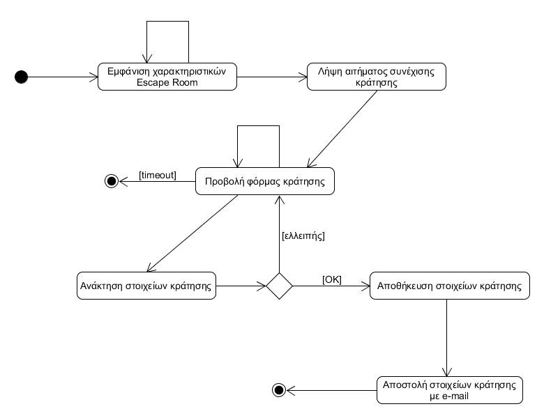
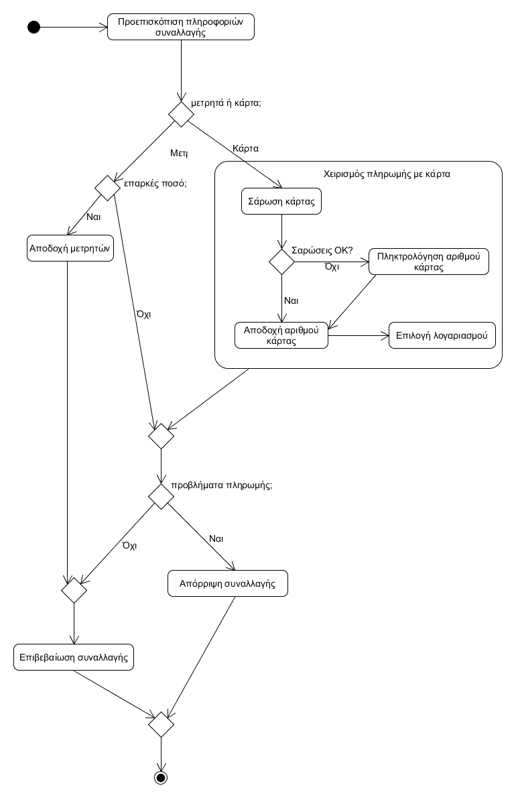
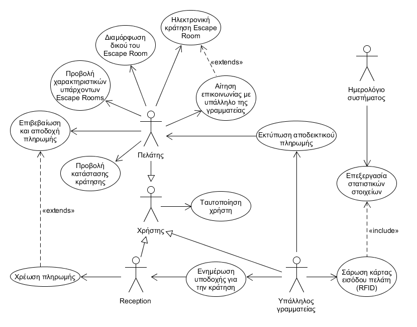
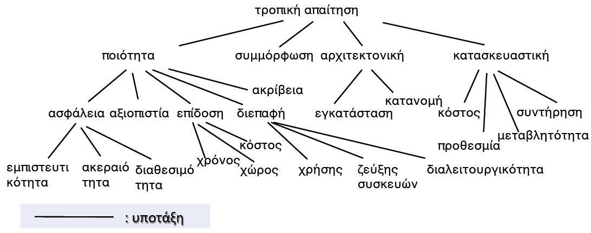
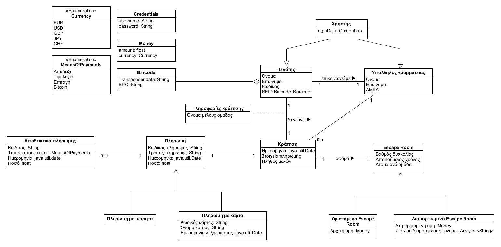
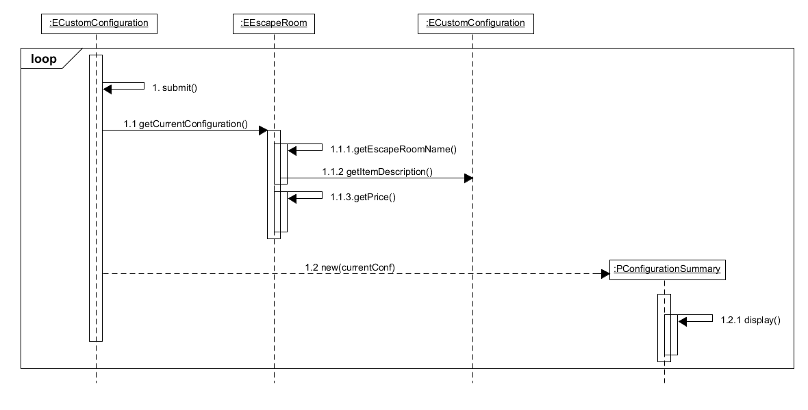
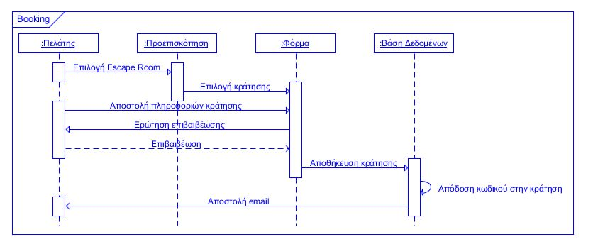

Πελάτης
– Πελάτης: Θέλει να επιλέγει τα διάφορα υπάρχοντα Escape Rooms και να επισκοπεί συνοπτικά και αναλυτικά τα χαρακτηριστικά τους (βαθμός δυσκολίας, απαιτούμενος χρόνος, άτομα ανά ομάδα κ.λπ.) και την τιμή.
– Διευθυντής πωλήσεων: Θέλει να προσελκύσει νέους πελάτες στα Escape Rooms.
Ο πελάτης έχει εκτελέσει με επιτυχία την περίπτωση χρήσης «Ταυτοποίηση χρήστη».
(*) Σε οποιοδήποτε σημείο το λογισμικό καταρρέει.
Ο πελάτης επαναφορτώνει τη σελίδα προεπισκόπισης των Escape Rooms.
1α. Ο web server δεν ανταποκρίνεται στο αίτημα επαναφόρτωσης.
Πελάτης
– Πελάτης: Θέλει να διαμορφώνει τα υπάρχοντα Escape Rooms ή να δημιουργεί εξ’ολοκλήρου νέα, που να πληρούν πρόσθετα χαρακτηριστικά ή να τροποποιούν κατάλληλα εκείνα των υπαρχόντων.
– Διευθυντής κρατήσεων: Θέλει να εξασφαλίσει τη κατάλληλη διαμόρφωση των Escape Rooms, ώστε να πληρούν τις αναθεωρημένες προδιαγραφές και να εξασφαλίζουν όσα ζήτησε ο πελάτης.
– Διευθυντής πωλήσεων: Θέλει να προσελκύσει νέους πελάτες στα Escape Rooms.
Ο πελάτης έχει εκτελέσει με επιτυχία τις περιπτώσεις χρήσης «Ταυτοποίηση χρήστη» και «Προβολή χαρακτηριστικών υπάρχοντων Escape Rooms».
(*) Σε οποιοδήποτε σημείο το λογισμικό καταρρέει.
Ο πελάτης επαναφορτώνει τη σελίδα με τη φόρμα διαμόρφωσης Escape Rooms.
1α. Ο web server δεν ανταποκρίνεται στο αίτημα επαναφόρτωσης.
3α. Ο πελάτης επιλέγει «διαμόρφωση» δίχως να έχει καταχωρήσει ορισμένα απαιτούμενα στοιχεία.
3β. Ο πελάτης επιλέγει «διαμόρφωση», για ένα δεδομένο υπάρχον Escape Room, ενώ τα τροποποιημένα χαρακτηριστικά της διαμόρφωσης είναι ασύμβατα με τα χαρακτηριστικά του επιλεγμένου Escape Room.
3γ. Ο πελάτης επιλέγει «επαναφορά» για να μεταβεί σε μια άδεια φόρμα διαμόρφωσης.
Πελάτης
– Πελάτης: Θέλει να κάνει κράτηση σε ένα δεδομένο Escape Room (υπάρχον ή διαμορφωμένο).
– Διευθυντής πωλήσεων: Θέλει να προσελκύσει νέους πελάτες στα Escape Rooms.
Ο πελάτης έχει εκτελέσει με επιτυχία την περίπτωση χρήσης «Ταυτοποίηση χρήστη».
Ο πελάτης επιλέγει να κάνει κράτηση στο Escape Room, επιλέγοντας «συνέχεια» κατόπιν εμφάνισης των χαρακτηριστικών του Escape Room στην οθόνη.
[Σημείο Επέκτασης Ε1: Κράτηση κατόπιν συνεννόησης]
(*) Σε οποιοδήποτε σημείο το λογισμικό καταρρέει.
Ο πελάτης επαναφορτώνει τη σελίδα κράτησης Escape Rooms.
1α. Ο web server δεν ανταποκρίνεται στο αίτημα επαναφόρτωσης.
3α. Ο πελάτης επιλέγει «κράτηση» δίχως να έχει καταχωρήσει όλα τα απαιτούμενα στοιχεία.
3β. Ο πελάτης επιλέγει «κράτηση» ενώ τα συμπληρωθέντα στοιχεία δεν είναι σύμφωνα με τα χαρακτηριστικά του επιλεγμένου Escape Room.
3γ. Ο πελάτης επιλέγει «επαναφορά» για να μεταβεί σε μια άδεια φόρμα κράτησης.
3δ. Παρέρχεται ο μέγιστος χρόνος παραμονής στη σελίδα για τη συμπλήρωση της φόρμας.
– Αν η μελέτη περίπτωσης ολοκληρωθεί με επιτυχία, η κράτηση καταχωρείται στη βάση δεδομένων.
– Σε κάθε άλλη περίπτωση, η κατάσταση του συστήματος παραμένει αμετάβλητη.

Πελάτης
– Πελάτης: Θέλει να διαμορφώνει τα υπάρχοντα Escape Rooms ή να δημιουργεί εξ’ολοκλήρου νέα, που να πληρούν πρόσθετα χαρακτηριστικά ή να τροποποιούν κατάλληλα εκείνα των υπαρχόντων.
– Υπάλληλος γραμματείας: Θέλει να εξασφαλίσει βέλτιστη προώθηση των Escape Rooms, αναλυτικότερη πληροφόρηση για τον πελάτη, καθώς και μεγιστοποίηση των κρατήσεων που αναλαμβάνει ο ίδιος.
– Διευθυντής πωλήσεων: Θέλει να προσελκύσει νέους πελάτες στα Escape Rooms.
Ο πελάτης επιθυμεί να επικοινωνήσει με έναν υπάλληλο της γραμματείας για να προσθα-φαιρέσει χαρακτηριστικά ή να τροποποιήσει κατάλληλα εκείνα των υφιστάμενων Escape Rooms, να συζητήσει σχετικά με τις υπάρχουσες επιλογές, καθώς και να διαπραγματευτεί την τιμή.
Ο πελάτης έχει εκτελέσει με επιτυχία τις περιπτώσεις χρήσης «Ταυτοποίηση χρήστη» και «Προβολή χαρακτηριστικών υπάρχοντων Escape Rooms». Ο υπάλληλος της γραμματείας έχει εκτελέσει με επιτυχία την περίπτωση χρήσης «Ταυτοποίηση χρήστη».
(*) Σε οποιοδήποτε σημείο το λογισμικό καταρρέει.
Ο πελάτης επαναφορτώνει τη σελίδα με τη φόρμα επικοινωνίας.
1α. Ο web server δεν ανταποκρίνεται στο αίτημα επαναφόρτωσης.
Η περίπτωση χρήσης επανεκκινείται, επιστρέφοντας στο βήμα 1.
3α. Ο πελάτης επιλέγει «υποβολή αιτήματος επικοινωνίας» δίχως να έχει καταχωρήσει όλα τα απαιτούμενα στοιχεία.
3β. Ο πελάτης επιλέγει «επαναφορά» για να μεταβεί σε μια άδεια φόρμα επικοινωνίας.
Πελάτης
– Πελάτης: Θέλει να γνωρίζει ανά πάσα στιγμή, τα στοιχεία της κράτησής του, να επιβεβαιώσει το γεγονός ότι αυτή έχει ολοκληρωθεί και καταχωρηθεί, καθώς επίσης και να την κοινοποιεί στους συμπαίκτες του.
– Άλλα μέλη ομάδας: Θέλουν να έχουν πρόσβαση ανά πάσα στιγμή, στα στοιχεία της κράτησης που υπέβαλε ο πελάτης, να επιβεβαιώνουν την περάτωσή της, όπως και να δουν στοιχεία του επιλεγμένου Escape Room.
Ο πελάτης έχει εκτελέσει με επιτυχία τις περιπτώσεις χρήσης «Ταυτοποίηση χρήστη» και «Ηλεκτρονική κράτηση Escape Room».
(*) Σε οποιοδήποτε σημείο το λογισμικό καταρρέει.
Ο πελάτης επαναφορτώνει τη σελίδα αναζήτησης κράτησης.
1α. Ο web server δεν ανταποκρίνεται στο αίτημα επαναφόρτωσης.
2α. Ο πελάτης εισάγει εσφαλμένα τον κωδικό του στη μηχανή αναζήτησης.
Πελάτης
– Πελάτης: Θέλει να πληρώνει για κάθε κράτησή του στα Escape Rooms, καθώς επίσης να επιλέγει τη μέθοδο πληρωμής (π.χ. μετρητά, paypal, πιστωτική κάρτα) και τον τύπο του αποδεικτικού πληρωμής.
– Οικονομικός διευθυντής: Θέλει να διευθετούνται οι οικονομικές υποχρεώσεις των Escape Rooms.
Ο πελάτης έχει εκτελέσει με επιτυχία τις περιπτώσεις χρήσης «Ταυτοποίηση χρήστη» και «Ηλεκτρονική κράτηση Escape Room».
Ο πελάτης αποφασίζει να πληρώσει για την κράτηση του Escape Room που έχει περατώσει, τη μέθοδο πληρωμής, καθώς επίσης και τον τύπο του αποδεικτικού πληρωμής που θα λάβει.
[Σημείο Επέκτασης Ε2: Πληρωμή με μετρητά ή πιστωτική/χρεωστική κάρτα]
(*) Σε οποιοδήποτε σημείο το λογισμικό καταρρέει.
Ο πελάτης επαναφορτώνει τη σελίδα επιβεβαίωσης και αποδοχής της πληρωμής.
1α. Ο web server δεν ανταποκρίνεται στο αίτημα επαναφόρτωσης.
3β. Ο πελάτης επιλέγει «ακύρωση» αντί για «ολοκλήρωση».
3γ. Ο πελάτης επιλέγει «επαναφορά» για να επαναλάβει την πληρωμή.
3δ. Παρέρχεται ο μέγιστος χρόνος παραμονής στη σελίδα για την περάτωση της πληρωμής.
Reception
– Πελάτης: Θέλει να πραγματοποιεί συναλλαγές, που αφορούν τις κρατήσεις του μέσω του συστήματος διαχείρισης αυτών σε Escape Rooms, χρησιμοποιώντας διαφορετικές μεθόδους πληρωμής.
– Reception: Θέλει να διαχειρίζεται, να υλοποιεί συναλλαγές, να ελέγχει τη δυνατότητα των πελατών να είναι συνεπείς στις συναλλαγές τους και να επιτρέπει την είσοδο στο Escape Room.
Ο πελάτης δηλώνει ότι είναι έτοιμος, ευρισκόμενος στο χώρο του Escape Room να εισέλθει σε αυτό, διαθέτει έγκυρη κάρτα RFID και έχει πραγματοποιήσει κράτηση για το συγκεκριμένο Escape Room και το δεδομένο χρόνο.
Ο πελάτης έχει εκτελέσει με επιτυχία τις περιπτώσεις χρήσης «Ταυτοποίηση χρήστη» και «Προβολή χαρακτηριστικών υπάρχοντων Escape Rooms». Ο υπάλληλος της γραμματείας έχει εκτελέσει με επιτυχία την περίπτωση χρήσης «Ταυτοποίηση χρήστη».
(*) Σε οποιοδήποτε σημείο το λογισμικό καταρρέει.
Ο υπάλληλος επαναφορτώνει τη σελίδα χρέωσης πληρωμής.
1α. Ο web server δεν ανταποκρίνεται στο αίτημα επαναφόρτωσης.
2α. Ο πελάτης δεν διαθέτει το επαρκές ποσό για την είσοδο στο Escape Room.
3α. Η σάρωση της κάρτας του πελάτη δεν μπορεί να πραγματοποιηθεί.
Μετά από τρεις αποτυχημένες προσπάθειες ο υπάλληλος πληκτρολογεί τον αριθμό της κάρτας.
1α. Ο αριθμός της κάρτας δεν είναι έγκυρος.
Ο υπάλληλος προτείνει στον πελάτη να πληρώσει με μετρητά.
1α. Ο πελάτης δεν διαθέτει μαζί του επαρκή μετρητά.
– Αν η περίπτωση χρήσης έχει ολοκληρωθεί επιτυχώς η πληρωμή καταγράφεται στη βάση δεδομένων.
– Σε κάθε άλλη περίπτωση, η κατάσταση του συστήματος παραμένει αμετάβλητη.

Χρήστης
– Πελάτης: Θέλει να προβάλλει, να διαμορφώνει Escape Rooms, να πραγματοποιεί και να διαχειρίζεται κρατήσεις.
– Υπάλληλος γραμματείας: Θέλει να διαχειρίζεται κρατήσεις, να ελέγχει την είσοδο των πελατών στα Escape Rooms με χρήση τεχνολογιών RFID, να εκτυπώνει αποδείξεις για τις περατωθείσες συναλλαγές.
– Reception: Θέλει να ενημερώνεται εγκαίρως για τις προσεχείς κρατήσεις και να διαχειρίζεται τις εκκινούμενες συναλλαγές για κρατήσεις Escape Rooms με το σύστημα με μετρητά ή κάρτα.
Δεν υπάρχουν προϋποθέσεις για αυτή την περίπτωση χρήσης.
(*) Σε οποιοδήποτε σημείο το λογισμικό καταρρέει.
Ο χρήστης επαναφορτώνει τη σελίδα ταυτοποίησης.
1α. Ο web server δεν ανταποκρίνεται στο αίτημα επαναφόρτωσης.
2α. Ο πελάτης εισάγει εσφαλμένα credentials (username ή και κωδικό πρόσβασης) στη φόρμα ταυτοποίησης.
Υπάλληλος γραμματείας
– Πελάτης: Θέλει, όταν πραγματοποιεί κρατήσεις Escape Rooms, να εισέρχεται αυτά στο συμφωνηθέντα χρόνο.
– Διευθυντής κρατήσεων: Αποσκοπεί στην εξυπηρέτηση του πελάτη με το βέλτιστο δυνατό τρόπο στα Escape Rooms, την απροσδόκητη ολοκλήρωση των κρατήσεων, με την είσοδο του πελάτη στο Escape Room.
– Υπάλληλος γραμματείας: Θέλει να γνωστοποιεί εγκαίρως τις κρατήσεις των πελατών στα Escape Rooms, ώστε να εξασφαλίζεται η προσδοκώμενη είσοδος τους στο χώρο, στο συμφωνηθέντα χρόνο.
– Reception: Θέλει να ενημερώνεται εγκαίρως για τις προσεχείς κρατήσεις και να υποδέχεται τους πελάτες, την προβλεπόμενη ώρα άφιξής τους στο Escape Room, ώστε να μην δυσαρεστούνται.
Ο πελάτης έχει εκτελέσει με επιτυχία τις περιπτώσεις χρήσης «Ταυτοποίηση χρήστη» και «Προβολή χαρακτηριστικών υπάρχοντων Escape Rooms». Ο υπάλληλος της γραμματείας και της Reception έχουν εκτελέσει αμφότεροι με επιτυχία την περίπτωση χρήσης «Ταυτοποίηση χρήστη».
(*) Σε οποιοδήποτε σημείο το λογισμικό καταρρέει.
Ο υπάλληλος επαναφορτώνει τη σελίδα αναζήτησης κράτησης.
1α. Ο web server δεν ανταποκρίνεται στο αίτημα επαναφόρτωσης.
3α. Ο υπάλληλος εισάγει εσφαλμένα τον κωδικό κράτησης στη φόρμα αναζήτησης.
3β. Ο υπάλληλος επιλέγει «αναζήτηση κράτησης» δίχως να έχει καταχωρήσει τον κωδικό κράτησης.
3γ. Ο πελάτης επιλέγει «επαναφορά» για να μεταβεί σε μια άδεια φόρμα αναζήτησης.
3δ. Ο κωδικός κράτησης που εισήγαγε ο υπάλληλος δεν υπάρχει ή καταδεικνύεται εσφαλμένος.
3ε. Παρέρχεται ο μέγιστος χρόνος παραμονής στη σελίδα για τη συμπλήρωση της φόρμας.
Υπάλληλος γραμματείας
– Πελάτης: Θέλει, όταν πραγματοποιεί πληρωμές σε Escape Rooms, να παραλαμβάνει το αποδεικτικό πληρωμής.
– Υπάλληλος γραμματείας: Θέλει να καταχωρεί τις περατωθείσες συναλλαγές στο φορολογικό αρχείο, εκδίδοντας για τους πελάτες τα επιθυμητά αποδεικτικά πληρωμής, λ.χ. αποδείξεις ή τιμολόγια.
– Τοπική Δημόσια Οικονομική Υπηρεσία (ΔΟΥ): Θέλει η επιχείρηση διαχείρισης Escape Rooms να δρα σύμφωνα με το ισχύον φορολογικό πλαίσιο και να εκδίδει αποδεικτικά πληρωμής ως είθισται.
Ο πελάτης έχει εκτελέσει με επιτυχία τις περιπτώσεις χρήσης «Ταυτοποίηση χρήστη» και «Προβολή χαρακτηριστικών υπάρχοντων Escape Rooms». Ο υπάλληλος της γραμματείας έχει εκτελέσει με επιτυχία με επιτυχία την περίπτωση χρήσης «Ταυτοποίηση χρήστη».
(*) Σε οποιοδήποτε σημείο το λογισμικό καταρρέει.
Ο υπάλληλος επαναφορτώνει τη σελίδα αναζήτησης πληρωμής.
1α. Ο web server δεν ανταποκρίνεται στο αίτημα επαναφόρτωσης.
3α. Ο υπάλληλος εισάγει εσφαλμένα τον κωδικό κράτησης στη φόρμα αναζήτησης.
3β. Ο υπάλληλος επιλέγει «αναζήτηση κράτησης» δίχως να έχει καταχωρήσει τον κωδικό κράτησης.
3γ. Ο πελάτης επιλέγει «επαναφορά» για να μεταβεί σε μια άδεια φόρμα αναζήτησης.
3δ. Ο κωδικός κράτησης που εισήγαγε ο υπάλληλος δεν υπάρχει ή καταδεικνύεται εσφαλμένος.
3ε. Παρέρχεται ο μέγιστος χρόνος παραμονής στη σελίδα για τη συμπλήρωση της φόρμας.
5α. Τα στοιχεία είναι εσφαλμένα και ο υπάλληλος επιλέγει «τροποποίηση στοιχείων».
Υπάλληλος γραμματείας
– Πελάτης: Θέλει, όταν πραγματοποιεί κρατήσεις Escape Rooms, να εισέρχεται αυτά στο συμφωνηθέντα χρόνο.
– Υπάλληλος γραμματείας: Θέλει να υποδέχεται τους πελάτες στο Escape Room, την προβλεπόμενη ώρα άφιξής τους, να εξασφαλίζει την προσδοκώμενη είσοδό τους στο χώρο και να υπολογίζει στατιστικά βάσει αυτής.
– Διευθυντής πωλήσεων: Θέλει να προσελκύσει νέους πελάτες στο Escape Room αυξάνοντας τα στατιστικά κρατήσεων.
– Διευθυντής κρατήσεων: Θέλει να αυξάνεται η δημοτικότητα του Escape Room παράλληλα με τα στατιστικά κατάταξης.
Ο πελάτης έχει εκτελέσει με επιτυχία τις περιπτώσεις χρήσης «Ταυτοποίηση χρήστη» και «Ηλεκτρονική κράτηση Escape Room». Ο υπάλληλος της γραμματείας έχει εκτελέσει με επιτυχία με επιτυχία την περίπτωση χρήσης «Ταυτοποίηση χρήστη».
Το σύστημα επιτρέπει στον πελάτη και την προσερχόμενη ομάδα να εισέλθουν και καταγράφει τη στιγμή εισόδου, ακολουθούμενη από τη στιγμή εξόδου (timestamp), για να υπολογιστούν στατιστικά στοιχεία.
(Σενάριο: Υπολογισμός Στατιστικών στοιχείων, ΠΧ Επεξεργασία Στατιστικών Στοιχείων)
(*) Σε οποιοδήποτε σημείο το λογισμικό καταρρέει.
Ο υπάλληλος επαναφορτώνει τη σελίδα με τη φόρμα ταυτοποίησης παρευρισκό-μενου.
1α. Ο web server δεν ανταποκρίνεται στο αίτημα επαναφόρτωσης.
3α. Ο υπάλληλος εισάγει εσφαλμένα τον κωδικό κράτησης στη φόρμα ταυτοποίησης.
3β. Ο πελάτης επιλέγει «επαλήθευση» δίχως να έχει καταχωρήσει κωδικό.
3γ. Ο πελάτης επιλέγει «επαναφορά» για να μεταβεί σε μια άδεια φόρμα ταυτοποίησης.
Ημερολόγιο συστήματος
– Διευθυντής πωλήσεων: Θέλει να προσελκύσει νέους πελάτες στο Escape Room αυξάνοντας τα στατιστικά κρατήσεων.
– Διευθυντής κρατήσεων: Θέλει να αυξάνεται η δημοτικότητα του Escape Room παράλληλα με τα στατιστικά κατάταξης.
Δεν υπάρχουν προϋποθέσεις για αυτή την περίπτωση χρήσης.
(*) Σε οποιοδήποτε σημείο το λογισμικό καταρρέει.
Το περιβάλλον εκτέλεσης επανεκκινεί τη σύνδεση με το ημερολόγιο συστήματος και το δαίμονα υπολογισμού στατιστικών.
1α. Ο δαίμονας (deamon) δεν ανταποκρίνεται στο αίτημα επαναφόρτωσης.
6α. Δεν υπάρχουν στατιστικά προς καταγραφή.
6β. Η διασύνδεση με το σύστημα αρχείων για την καταγραφή των στατιστικών αποτυγχάνει.
Το περιβάλλον εκτέλεσης επανεκκινεί τη σύνδεση με το ημερολόγιο συστήματος και το δαίμονα υπολογισμού στατιστικών.
1α. Ο δαίμονας (daemon) δεν ανταποκρίνεται στο αίτημα επαναφόρτωσης.
Υπό τη μορφή διαγράμματος περιπτώσεων χρήσης της UML (Use
Case Diagram), οι δράστες και οι περιπτώσεις χρήσης του συστήματος
μοντελοποιούνται ως φαίνεται κάτωθι.

Από την εκμαίευση απαιτήσεων προκύπτουν οι εξής λειτουργικές και ορισμένες ειδικές (τροπικές) απαιτήσεις για το Σύστημα διαχείρισης κρατήσεων Escape Rooms:
Το σύστημα θα εμφανίζει τα χαρακτηριστικά και την τιμή των υπαρχόντων Escape Rooms.
[Λειτουργική απαίτηση]
Το σύστημα θα δίνει τη δυνατότητα στον πελάτη να εξετάσει αναλυτικά τα χαρακτηριστικά του κάθε Escape Room είτε για να το επιλέξει ως έχει, είτε για να προχωρήσει στη διαμόρφωση ενός δικού του Escape Room.
[Τροπική απαίτηση, ποιότητας-επίδοσης-χρόνου]
Το σύστημα θα πρέπει να υπολογίζει το κόστος κάθε διαμόρφωσης κατόπιν απαίτησης του πελάτη.
[Τροπική απαίτηση, ποιότητας-επίδοσης-χρόνου]
Το σύστημα θα επιτρέπει στον πελάτη να κάνει κράτηση ηλεκτρονικά (online) σε ένα Escape Room, ή να ζητήσει από κάποιον υπάλληλο της γραμματείας να επικοινωνήσει μαζί του για να του εξηγήσει τις λεπτομέρειες και τα χαρακτηριστικά του Escape Room και της κράτησης ή να διαπραγματευτεί την τιμή πριν την διενέργεια της κράτησης.
[Τροπική απαίτηση, ποιότητας-επίδοσης-χρόνου]
Το σύστημα θα παρέχει στον πελάτη μία φόρμα για να τη συμπληρώσει με σκοπό την κράτηση ενός Escape Room, με το όνομα του αρχηγού της ομάδας, τα υπόλοιπα μέλη και τα στοιχεία πληρωμής.
[Τροπική απαίτηση, συμμόρφωσης]
Το σύστημα θα υποστηρίζει την κράτηση Escape Room από τον πελάτη, για συγκεκριμένη μέρα και ώρα.
[Λειτουργική απαίτηση]
Το σύστημα θα επαληθεύει το επιπτρεπόμενο του πλήθους των μελών για το επιλεγμένο Escape Room και την μέθοδο πληρωμής.
[Λειτουργική απαίτηση]
Το σύστημα θα υποστηρίζει την αποστολή ηλεκτρονικών αιτήσεων από τους υπαλλήλους της γραμματείας με τις λεπτομέρειες κάθε κράτησης, προς στη Reception του Escape Room που αυτή αφορά, κατόπιν της καταχώρησης της κράτησης του πελάτη στο σύστημα.
[Τροπική απαίτηση, συμμόρφωσης, ποιότητας-επίδοσης-χρόνου]
Το σύστημα θα προωθεί με e-mail στον πελάτη τα στοιχεία της κράτησης, τα χαρακτηριστικά του Escape Room και τον κωδικό του πελάτη, έτσι ώστε να έχει τη δυνατότητα να ελέγχει ανά πάσα στιγμή την κράτησή του.
[Τροπική απαίτηση, συμμόρφωσης, διεπαφής-χρήσης]
Το σύστημα θα επαληθεύει την ταυτότητα του πελάτη πριν την είσοδό του στο χώρο, περνώντας την κάρτα με το τσιπάκι RFID του πελάτη πάνω από τον σαρωτή, καταγράφοντας τους χρόνους εισόδου/εξόδου.
[Τροπική απαίτηση, συμμόρφωσης, διεπαφής-χρήσης]
Το σύστημα θα ικανοποιεί αιτήματα του πελάτη για σάρωση της κάρτας εισόδου (RFID) του για ένα συγκεκριμένο Escape Room ώστε να γνωστοποιηθούν η περιγραφή του και το ποσό της χρέωσης για το εν λόγω Escape Room ανά μέλος της ομάδας.
[Τροπική απαίτηση, συμμόρφωσης]
Το σύστημα θα διεκπεραιώνει την πληρωμή του κομίστρου πριν την είσοδό του στο Escape Room, σε μετρητά ή με χρήση κάρτας (χρεωστικής ή πιστωτικής).
[Τροπική απαίτηση, διεπαφής-χρήσης]
Το σύστημα θα ελέγχει αν υπάρχει κράτηση για είσοδο τη δεδομένη μέρα και ώρα, αναγνωρίζει ότι η συναλλαγή μπορεί να προχωρήσει και παρέχει τη δυνατότητα εισόδου στο χώρο και εκτύπωσης της απόδειξης για τον πελάτη.
[Λειτουργική απαίτηση]
Το σύστημα θα υπολογίζει, κατά τη λήξη κάθε μήνα, στατιστικά κατάταξης ανά Escape Room και στατιστικά κρατήσεων ανά Escape Room.
[Τροπική απαίτηση, ποιότητας-επίδοσης-χρόνου]
Για τον χαρακτηρισμό των απαιτήσεων χρησιμοποιήθηκε η ακόλουθη ταξινομία των τροπικών απαιτήσεων από τον Axel VanLamsweerde, Chap. 2 Domain Understanding & Requirements Elicitation

Υπό τη μορφή διαγράμματος κλάσεων (ή κατά πολλούς διαγράμματος τάξεων) της UML (Class Diagram), οι κλάσεις του σχεδιαζόμενου συστήματος λογισμικού
μοντελοποιούνται ως φαίνεται κάτωθι.



© 2017-18 Τεχνολογία Λογισμικού, Γεώργιος Μ. Μοσχόβης (3150113), Σταύρος Μαρκόπουλος (3150098)